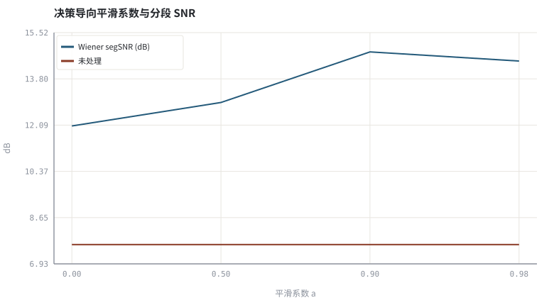
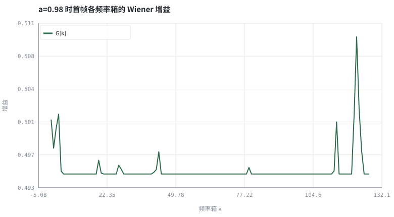

第 13 章Wiener 滤波、先验 SNR 与 MMSE-STSA
把「拍脑袋的增益」换成最小均方误差意义下的最优增益，并解释决策导向估计。
本章位置：第 12 章 · 谱减、过减因子与音乐噪声 的谱减是「无状态增益」，本章引入跨帧状态；第 14 章 · AGC：包络跟踪、攻击释放、限幅与响度 用同样的一阶状态平滑 AGC 增益，第 23 章 · 神经噪声抑制：从 RNNoise 到 DNS Challenge 则让网络自己学这条递推。
决策导向是一条跨帧指数移动平均：state = a*state + (1-a)*evidence，与监控里平滑 QPS 曲线同构，只是状态维度等于频率箱数。
- 能从 MMSE 准则推导 Wiener 增益 G = ξ/(1+ξ)。
- 能区分后验 SNR γ 与先验 SNR ξ，说明决策导向递推的作用。
- 能实现 Wiener 降噪器并量化平滑系数对指标的影响。
- 能说清 Wiener 与谱减在形式上的联系与差别。
§知识点地图
每个知识点都配了 1～2 个扩展学习链接；本章完整资源清单见 扩展学习。
| # | 知识点 | 扩展学习 | 状态 |
|---|---|---|---|
| 1 | MMSE 估计 | Wiener filter ↗ · RNNoise 论文（arXiv 1709.08243） ↗ | 正文已覆盖 |
| 2 | Wiener 增益 | Automatic gain control ↗ · ffmpeg dynaudnorm ↗ | 正文已覆盖 |
| 3 | 后验 SNR γ | Wiener filter ↗ · RNNoise 论文（arXiv 1709.08243） ↗ | 正文已覆盖 |
| 4 | 先验 SNR ξ | Wiener filter ↗ · RNNoise 论文（arXiv 1709.08243） ↗ | 正文已覆盖 |
| 5 | 决策导向估计 | Wiener filter ↗ · RNNoise 论文（arXiv 1709.08243） ↗ | 正文已覆盖 |
| 6 | MMSE-STSA | Wiener filter ↗ · RNNoise 论文（arXiv 1709.08243） ↗ | 正文已覆盖 |
| 7 | 增益平滑与拖尾 | Automatic gain control ↗ · ffmpeg dynaudnorm ↗ | 正文已覆盖 |
| 8 | 噪声功率谱 | ffmpeg afftdn ↗ · Microsoft DNS Challenge ↗ | 正文已覆盖 |
§13.1从最优估计到一条增益曲线
Ŝ = argmin E[(S − Ŝ)²] → G = ξ/(1+ξ) ，ξ = E|S|²/σ_n²，γ = |Y|²/σ_n²
ξ 是先验 SNR（观测前对干净谱能量的期望），γ 是后验 SNR（这帧实际测到的能量比）。谱减用 γ 直接代公式，对随机起伏敏感；Wiener 用 ξ，把上一帧估计当先验，天然更平滑。
| 量 | 定义 | 在代码里 | 作用 |
|---|---|---|---|
| γ[t,k] | |Y|² / σ_n² | 当帧计算 | 瞬时证据 |
| ξ[t,k] | a·G²[t−1]·γ[t−1] + (1−a)·max(γ−1,0) | 递推维护 | 平滑后的先验 |
| a | 0.9～0.99 | 参数区 | 越大越平滑，也越拖尾 |
| G | ξ/(1+ξ) | 逐箱逐帧 | 恒在 [0,1]，无需人为下限 |
§13.2决策导向：用上一帧的输出当这一帧的先验
上式即 Ephraim–Malah 系列里的决策导向（decision-directed）估计。从程序员视角看，这是一条跨帧的一阶 IIR 状态：算法从此有了状态，也就有了记忆和延迟。
a = 0：完全用瞬时估计，退化为带噪增益，音乐噪声明显。a → 1：增益几乎不变，输出平稳但语音起音被拖慢。- MMSE-STSA 在增益里进一步引入修正贝塞尔函数，低 SNR 箱压得更彻底，工程上常查表近似。
这里的状态递推与 第 14 章 · AGC：包络跟踪、攻击释放、限幅与响度 的 AGC 包络、第 08 章 · VAD 与噪声功率谱估计（MCRA 思路） 的 MCRA 噪声跟踪是同一种一阶平滑器，只是平滑对象不同：增益、电平、噪声功率。
§Python 实验
实验 13-1 · 决策导向 Wiener 增益与平滑系数扫描
#!/usr/bin/env python3
# -*- coding: utf-8 -*-
"""实现先验 SNR 递推与 Wiener 增益，扫描平滑系数并与未处理信号对照。
全部语音 / 噪声 / 房间冲激响应均为代码合成信号，仅用于教学演示机制与量级。
"""
from __future__ import annotations
import math
import pathlib
import random
import statistics
import sys
import time
_here = pathlib.Path(__file__).resolve()
for _p in _here.parents:
if (_p / "tools" / "dsp.py").exists():
sys.path.insert(0, str(_p / "tools"))
break
from dsp import (SAMPLE_RATE, fft, hann, stft, istft, magnitude_db, spectrum,
white_noise, tone, chirp, synthetic_speech, rir, convolve,
fft_convolve, delay, clip, normalize_peak, rms, rolling_rms,
smooth, db, energy_db, snr_db, erle_db, seg_snr_db,
scale_align, si_sdr_db, lufs_approx,
write_wav, read_wav, wav_info)
from chart import Chart, heatmap, BLUE, RED, GREEN, AMBER
FIG = _here.parents[1] / "fig"
AUDIO = _here.parents[1] / "audio"
FIG.mkdir(exist_ok=True)
AUDIO.mkdir(exist_ok=True)
random.seed(7)
# ---- 参数区 ----
N = 8000
N_FFT, HOP = 256, 128
NOISE_AMP = 0.035
ALPHAS = (0.0, 0.50, 0.90, 0.98)
# ---- 计算与作图 ----
rng = random.Random(7)
clean = synthetic_speech(rng, N)
noise = white_noise(rng, N, NOISE_AMP)
noisy = [clean[i] + noise[i] for i in range(N)]
nf = stft(noise, N_FFT, HOP)[:8]
npow = [sum(re[k]**2 + im[k]**2 for re, im in nf) / len(nf) for k in range(N_FFT)]
def wiener(alpha):
frames = stft(noisy, N_FFT, HOP)
prev_g, prev_gamma = [1.0] * N_FFT, [1.0] * N_FFT
first = None
for re, im in frames:
new_g, new_gamma = [], []
for k in range(N_FFT):
gamma = (re[k]**2 + im[k]**2) / (npow[k] + 1e-12)
xi = alpha * prev_g[k]**2 * prev_gamma[k] + (1.0 - alpha) * max(gamma - 1.0, 0.0)
g = xi / (1.0 + xi + 1e-12)
re[k] *= g
im[k] *= g
new_g.append(g)
new_gamma.append(gamma)
if first is None:
first = new_g
prev_g, prev_gamma = new_g, new_gamma
return istft(frames, N_FFT, HOP, N), first
scores, outputs = [], []
for a in ALPHAS:
out, _g = wiener(a)
outputs.append(out)
scores.append(seg_snr_db(clean, scale_align(out, clean)))
_, gains = wiener(0.98)
c = Chart(FIG / "13-wiener.svg", "决策导向平滑系数与分段 SNR", xlabel="平滑系数 a", ylabel="dB",
xticks=[(i, "%.2f" % a) for i, a in enumerate(ALPHAS)])
c.line(range(len(ALPHAS)), scores, BLUE, label="Wiener segSNR (dB)")
c.line(range(len(ALPHAS)), [seg_snr_db(clean, noisy)] * len(ALPHAS), RED, label="未处理")
print("Wiener图:", c.save())
g = Chart(FIG / "13-gains.svg", "a=0.98 时首帧各频率箱的 Wiener 增益", xlabel="频率箱 k", ylabel="增益")
g.line(range(N_FFT // 2), gains[:N_FFT // 2], GREEN, label="G[k]")
print("增益图:", g.save())
write_wav(AUDIO / "13-noisy.wav", normalize_peak(noisy))
write_wav(AUDIO / "13-wiener.wav", normalize_peak(outputs[-1]))
print("未处理 segSNR=%.2f | Wiener: " % seg_snr_db(clean, noisy) +
" ".join("a=%.2f->%.2f" % (a, s) for a, s in zip(ALPHAS, scores)))
print("SI-SDR 未处理=%.2f -> a=0.98 后=%.2f | SAMPLE_RATE=%d N_FFT=%d" %
(si_sdr_db(noisy, clean), si_sdr_db(outputs[-1], clean), SAMPLE_RATE, N_FFT))操作：对照四个平滑系数的分段 SNR 与增益曲线；试听输出。 预期与判读：适度平滑显著提高分段 SNR 并让增益曲线连续；a=0 时增益随噪声随机起伏，a 过大则语音起音被拖慢。segSNR 无法反映拖尾，必须配合听测。
改参数看趋势：把 NOISE_AMP 提到 0.08，观察高噪声下各平滑系数的排序是否改变。 文件位置：part2/13-wiener-mmse/code/13-wiener-mmse.py


13-noisy.wav
带噪输入（16 kHz / 16-bit 单声道，代码合成信号，不是真实录音）
13-wiener.wav
a=0.98 的 Wiener 输出（16 kHz / 16-bit 单声道，代码合成信号，不是真实录音）
代码块右上角可一键复制；仓库里的 code/*.py 由 tools/extract_code.py 从这些代码块自动抽取。脚本只用标准库、固定 random.seed(7)，运行后写出 fig/*.svg 与 audio/*.wav；批量运行用 ./tools/run_python.sh。
§可选真机命令片段
以下命令不参与批量运行，需要本机自行安装对应工具。滤镜是否可用取决于本机 ffmpeg 版本与编译选项，请先用 ffmpeg -filters / ffmpeg -version 自查，并以 https://ffmpeg.org/ffmpeg-filters.html 与各自官方文档为准；本书不假定任何特定版本具备某项能力。
用 ffmpeg anlmdn 对照非平稳噪声的处理
ffmpeg -hide_banner -i noisy.wav -af anlmdn=s=256:p=0.002 out.wav说明：anlmdn 是 ffmpeg 文档中的非局部均值降噪滤镜；参数名与可用性以本机 `ffmpeg -h filter=anlmdn` 与 https://ffmpeg.org/ffmpeg-filters.html 为准。
§本章参考资料
按本章知识点挑选的精读资料；更多检索入口见 扩展学习。
RNNoise 论文（arXiv 1709.08243） ↗
论文A Hybrid DSP/Deep Learning Approach to Real-Time Full-Band Speech Enhancement
推荐理由：混合系统里频带增益的现代版本
§常见误区
- 把 γ 与 ξ 混用，导致增益在静音帧剧烈跳变。
- 平滑系数取 1，增益完全不更新，非平稳噪声下失效。
- 噪声功率谱用全段均值估计，把语音段也算进噪声。
- 认为 Wiener「最优」就等于主观最好（它只最优均方误差）。
§习题与思考
- 从 MMSE 准则推导实增益 G = ξ/(1+ξ)。
- 解释为什么决策导向会引入一帧量级的瞬态拖尾。
- 把噪声改成前静后响，观察固定噪声谱的失效。
§扩展学习
RNNoise 论文（arXiv 1709.08243） ↗
论文A Hybrid DSP/Deep Learning Approach to Real-Time Full-Band Speech Enhancement
继续检索
- Google Scholar：MMSE STSA OM-LSA a priori SNR MCRA ↗
- arXiv：MMSE STSA OM-LSA a priori SNR MCRA ↗
- GitHub：MMSE STSA OM-LSA a priori SNR MCRA ↗
全书链接总表见 FFmpeg Filters 文档 ↗ 与 附录 A.7；滤镜是否可用请以本机 ffmpeg -filters 为准。
§延伸阅读与内链
- 第 08 章 · VAD 与噪声功率谱估计（MCRA 思路） 噪声功率估计；第 19 章 · 时频掩码：IBM / IRM / CRM 与监督学习形式化 可学习掩码；第 23 章 · 神经噪声抑制：从 RNNoise 到 DNS Challenge RNNoise 频带增益。